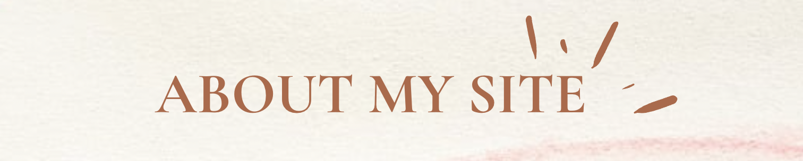

This website is build to let myself review and showcase the work.
It allows me to reflect on my skills, accomplishments, and areas of improvement.
This website also helps me gain a deeper understanding of my own strengths and weaknesses, which is
valuable for personal and professional growth.
This website has been developed solely using HTML, CSS & JavaScript. There are a couple of things which
this project taught me:
- Before this course, I only have a very basic knowledge on HTML and lacking of hands-on experience.
And this project provides me with practical, real-world experience in not only using HTML to
structure content, but also CSS for styling and layout, and JavaScript for interactivity.
This hands-on practice accelerates my learning and understanding of these languages.
- To me, the portfolio website is not a one-time creation.
It's an ongoing project that I can continuously update, refine, and enhance.
This iterative process allows me to practice incorporating new techniques, experimenting with
different design approaches, and implementing advanced functionalities.
In the future, this website can reinforces my habit of continuous learning and improvement, which I
believe is essential in the rapidly evolving field of web development.
- Building a website has taught me to create a proper planning before start to code is essential for
web design.
I have learned that taking the time to plan saves me from potential rework and helps maintain
consistency throughout the website.
For example, before I start the coding work, I took few days to look at different online examples
and draw a simple graph to show what elements I want to include
and how the structure looks like.